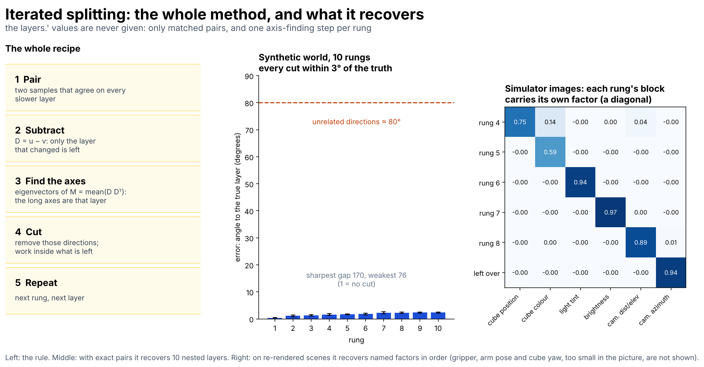
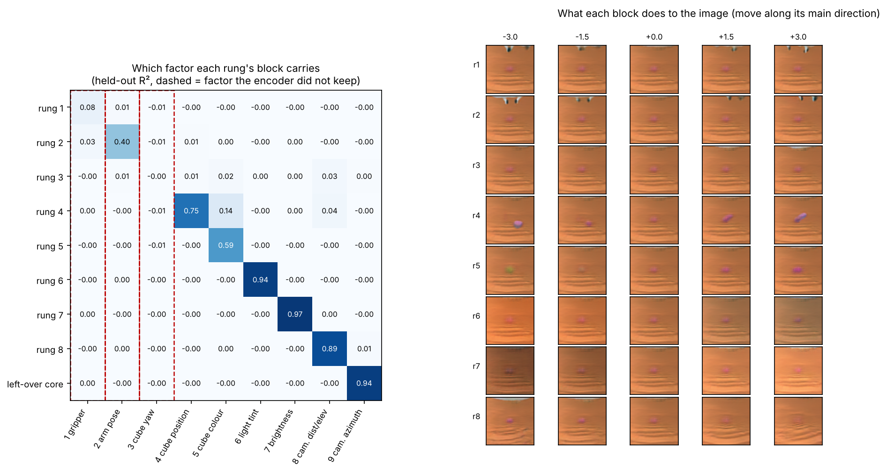

Whiten (step 2): subtract the mean μ and divide out the covariance C so no direction is stretched.
Pair differences (step 3): for rung k, a pair (u, v) shares every layer slower than k and redraws layers 1…k.
The cut (step 4): we want directions Q that the pairs leave untouched, so we minimise the average difference energy. The answer is closed-form: the eigenvectors of M with the smallest eigenvalues (no training needed in this step).
The large eigenvalues point along directions that change between the pair (this rung's block, size d). The small ones are what stays the same. A big gap means a real block exists; a gap near 1 means nothing to split.
Repeat (step 5): the next rung works only inside the leftover directions H:
Score (step 6): the principal angle θ between the found block and the true one (small = good), together with the gap size.
A moving version of this picture: docs/img/geometry_ladder.gif.
| Step | Question | Result |
|---|---|---|
| A: one split | Does the single eigen-split reproduce the SplitJEPA paper's split? | Yes, 5 of 5 seeds (invariant R² 0.989 vs the authors' 0.998). The paper's synthetic code does the same closed-form split. |
| B, E21: iterate | Can the left-over part be split again (exact pairs)? | Yes. Both rungs within about 1 degree of truth, gaps about 50. |
| E34, E39, E61: depth | Does it keep working deeper? | Yes, up to 10 rungs on 5 of 5 seeds: angle at most 2.8 degrees, gap at least 72 at every rung, no depth limit found. |
| E38: pairs, not speed | What carries the split? | Matched pairs. A temporal-speed split fails (80–89 degrees) where the pair split is at 0.7–1.1. |
| E54, E55: encoder | Does it hold with a learned, generic encoder? | Yes in the easy world (10 of 10 seeds, 0.2–1.9 degrees). But the easy world passes even with an untrained encoder, so this shows the split, not encoder learning. In a harder world training repairs only the mildest bend (5 of 5), not stronger ones (0 of 5). |
| E62: scene factors | Nameable layers in simulated robot images: cube position, colour, light, brightness, camera | Each factor the encoder keeps is recovered by its own rung, in order (5 of 8 rungs aligned). The three smallest factors (gripper, arm pose, cube yaw) were not kept, so the registered bar (gap line) was missed. |
| Robot (E59, E63–E65) | Same method on robot-camera data from the paper's recipe | The eigen-split beats the paper's fixed halves for viewpoint (5.05 vs 3.69; 7.34 vs 4.49). Layout separates cleanly, but progress is not isolated by a linear cut; the fixes tried (E63–E65) were refuted. |
| D: does it help? | Payoff over simpler baselines | Not shown. Equal accuracy to a one-shot split (the ladder adds a visible gap); the robustness gain was below the registered bar. |
| Pairs from data | Building the pairs without labels | Works for one rung up to a noise limit; rung 3 and deeper not built. |
| E66 (running) | Three-head encoder to separate progress on the robot | Training on the GPU pod; no result yet. |

Left: the recipe. Middle: with exact pairs, 10 nested layers each recovered within 3 degrees (unrelated directions would sit near 80). Right: on rendered robot scenes, each rung's block carries its own factor. (This figure still carries the older title "Iterated splitting".)

Each rung's block moves one named scene factor (cube position, colour, light tint, brightness, camera distance/elevation); the core keeps camera azimuth.
Works: repeated closed-form eigen-splitting of matched-pair differences recovers nested layers, in order, to a few degrees, down 10 rungs, where exact pairs and an informative encoder exist. Not yet shown: a payoff over simpler methods, pairs built from data beyond one rung, and a clean progress layer in the robot data.